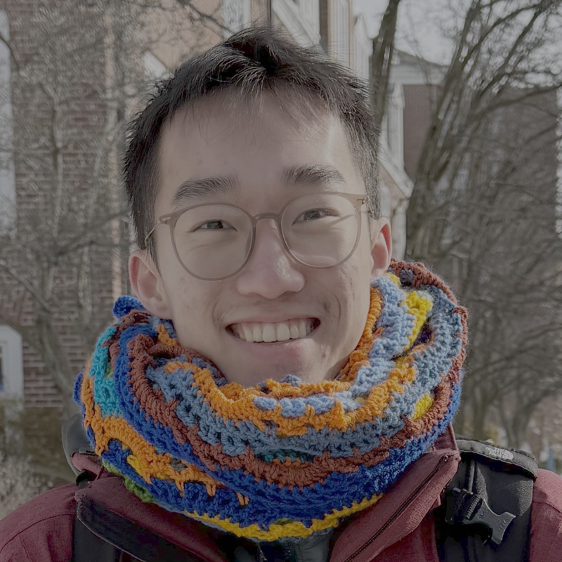

Alex Cai 蔡大真
In pursuit of namesake. PhD student in Computer Science at Harvard University.

Computer Science
Harvard University
Kempner Institute Graduate Fellow
adzcai at g dot harvard dot edu
Hello! I'm a second-year PhD student in Computer Science at Harvard University, advised by Prof. Kianté Brantley and funded by a Kempner Institute Graduate Fellowship.
I have come from the beaver hills, amiskwaciy, to the great hill, muhsachuweesut.
I am fascinated by language(s) and their acquisition by humans and machines. How does human language-learning differ from language-model training? I work on developmentally plausible, data-constrained (multilingual) language modelling, reinforcement learning, and imitation learning.
I am also intrigued by identity. What is there, if anything, that makes me who I am and not somebody else?
news
| Sep 2026 | Gave a talk at the Kempner Institute Workshop: Learning Dynamics in Natural and Artificial Intelligence, on investigating code-switched curriculum learning in data-constrained multilingual modelling. |
|---|---|
| Aug 2026 | Back in Addis Ababa as a TA for AddisCoder, teaching CS fundamentals to 120 high school students. |
| Jun 2026 | Started as a Teaching Development Fellow at the Derek Bok Center for Teaching and Learning (Jun–Sep 2026). |
| May 2026 | Talk at Kempner Spring Into Science: Grammar acquisition trajectories of developmentally plausible bilingual models. |
| 2026 | Feeding BabyLMs Macaroni was accepted to the EMNLP 2026 BabyLM Workshop. |
selected publications
-
EMNLP
-
NeurIPS
-
ThesisAn Introduction to Reinforcement LearningUndergraduate thesis, Harvard University, 2025Course textbook for Harvard CS/Stat 184 and Cornell CS 4789.